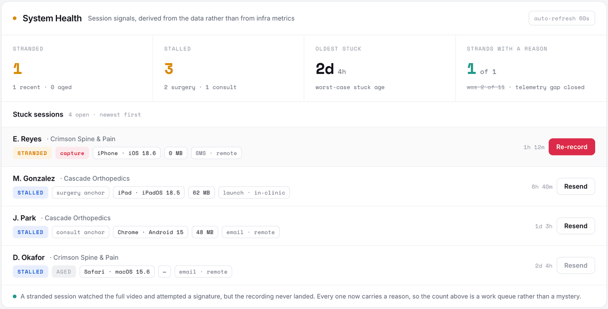
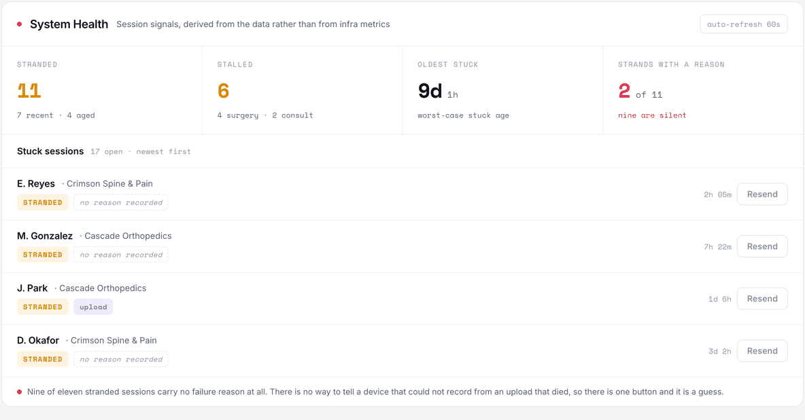
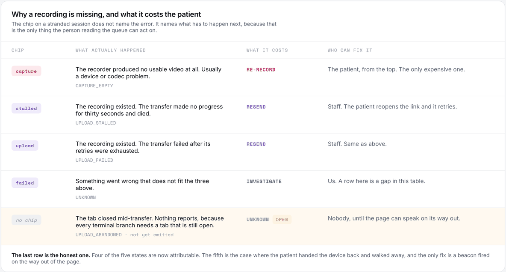
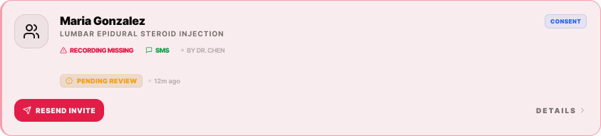
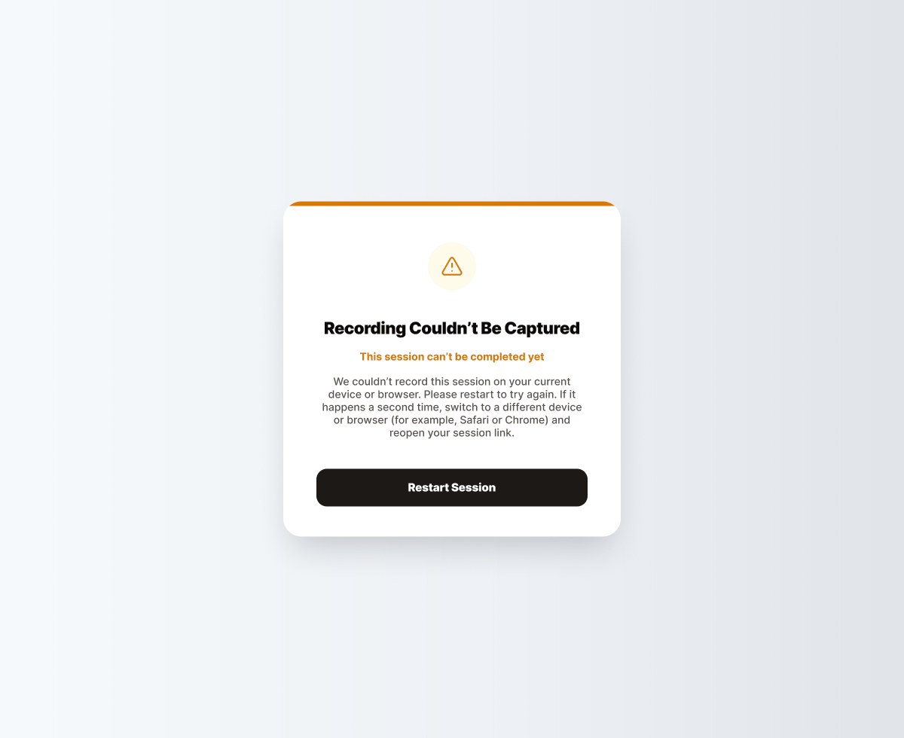

The consent that never recorded
Proof of viewing is the product. So when recordings started going missing, the first job was not fixing it. Nine of the eleven stranded sessions could not say what had gone wrong, and until they could, every fix was a guess.

The report
Two problems, tangled together
Mid-July, the recording-miss rate looked like it had roughly doubled after a deploy. A stranded session is one where the patient watched the whole video and reached the signature, but the recording never landed on the server. The session sits open forever. Nothing in the infrastructure alarms, because nothing in the infrastructure failed. It is a business-state problem, and you can only see it by querying the data.
Two things were tangled. There was a telemetry gap, where we could not see why a recording was missing. And there was a real defect somewhere underneath it. Both were live, and neither could be worked on honestly until they were pulled apart, because a fix aimed at the wrong one would still make the number move and we would have believed it.
So the first two weeks were not spent fixing recordings. They were spent making the next read able to tell the difference.

The vocabulary
Name the action, not the error
The obvious instinct is to record the error. Log the exception, put the code on the row, done. That produces a queue nobody can work.
The person reading this board is a staff member with a patient waiting. What they need from a row is not what went wrong. It is what it costs, and there are only two answers that matter.
If the recorder produced nothing at all, the patient has to start over. That is a phone call, an apology, and four minutes of their life again. If bytes existed and the transfer died, the patient reopens the link and it retries. That one is nearly free.
So the chip says capture or it says upload, and everything else about the failure lives behind the tooltip. Same underlying error taxonomy, sorted by consequence rather than by cause. The button next to the row changes with it, which is the point: the row is now an instruction rather than a notification.

The reads
What the instrumentation actually said
Once the reasons were landing, four reads settled the whole thing in five days.
Three aged strands, and zero fully silent. The telemetry gap was closed. That mattered more than the count, because it meant no reconciliation pass was needed to classify the backlog.
Five misses, and four of the five were upload-side, not capture-side. The problem was not devices failing to record. It was recordings failing to arrive.
The apparent doubling was never a regression. It was in-flight sessions being counted as misses inside the window. The deploy everyone suspected had nothing to do with it. Two weeks of pressure came from a number that was measuring itself wrong.
An incidental finding worth more than the fix: the server-side optimized transcode does not actually compress mp4. Raw and optimized come out identical. So the client-side bitrate cap is the only lever anyone has on recording size, and every plan that assumed otherwise was wrong.
What shipped was small: a recording-bitrate cap across every device class, a Firefox codec fix, and three additions to the diagnostics row. A device badge, a size chip, and the practice name.
Those three are the ones I would defend hardest. They turn the board into something a human can pattern-match on. Four rows in a row reading iPad and a large size is a story. The same four rows without those chips are just four rows.
Across the fleet, the first day post-fix.
The codec fix, isolated.
The case that had been driving a two-week build proposal.
One more thing worth saying, because it nearly cost us the read. The trailing four-day rate still looked bad after the fix. Not because anything was still breaking, but because pre-fix strands were aging into the window. A trailing average read immediately after a fix will lie to you in exactly this way, and the discipline is to look at sessions started after the deploy rather than at the number that is easiest to pull.
The streaming-upload project that had been scoped as two weeks of work got downgraded to insurance. The bitrate cap alone had fixed the case that justified it.
The residual
The one that cannot report itself
One case is left, and it is the interesting one, because it is structurally unreportable.
The recording captures fine. The upload starts. Then the patient closes the tab, or hands the iPad back and walks away, or the cellular connection drops in a parking garage. Every terminal branch in the upload code fires when the retry chain exhausts, and the retry chain can only exhaust in a tab that is still open. Nobody is home to write the failure down.
The fix is a beacon fired on the way out of the page, since that is the one request a browser will still deliver while it is closing. Until that ships, the honest thing is to leave the row unattributed rather than to guess a reason, which is why the last row in the table above is blank and labeled open rather than quietly folded into unknown.
Closing it means every strand is attributable, which is a very different sentence from most of them are.


Why this is design
The board is where the claim is either true or not
It would be easy to file this under operations. It is not. The entire product claim is that we can prove a patient watched, understood, and agreed. A session whose recording quietly vanishes is precisely the artifact a records request or a plaintiff's attorney asks to see, and it is the same gap an enterprise security review opens with.
Which makes the diagnostics surface a product surface. Its job is to keep the company honest about its own central claim, in public, on a screen someone looks at every morning. That is a design problem, and the design decisions in it were the ones that mattered: sorting failures by what they cost rather than by what they were, putting device and size on the row so a person can see a pattern, and leaving one row deliberately blank because we do not yet know.
A number that cannot say why is not a metric. It is a rumor with a decimal point.
Got a number nobody trusts?
Usually the fix is not the fix. It is being able to tell two failures apart, and designing the surface where a person finally can. Tell me what you are chasing.
Start the conversation